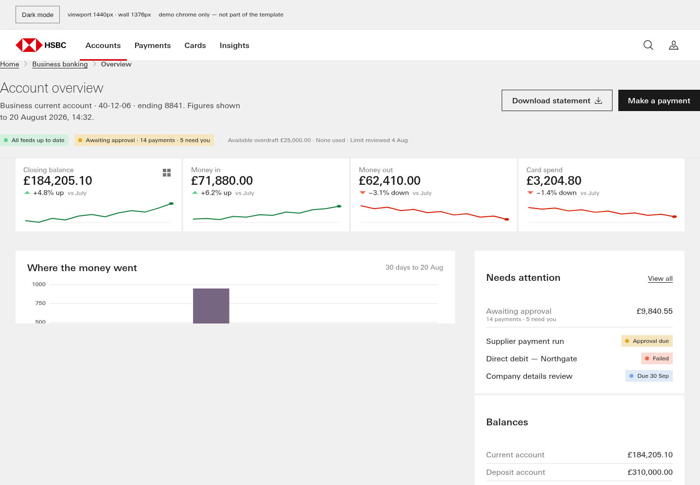
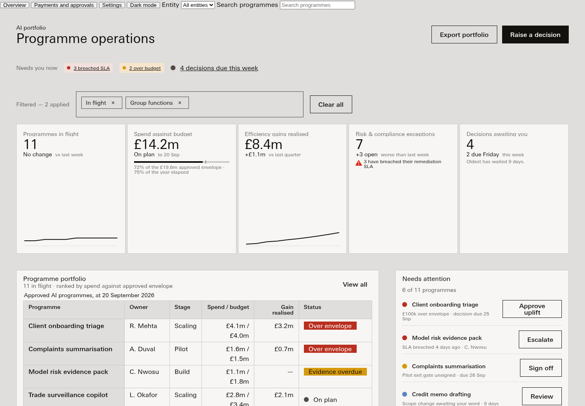
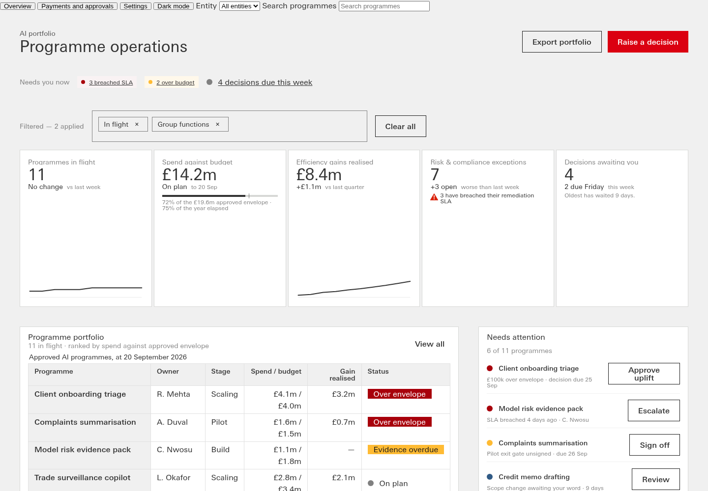

Apollo eval harness r4c-1.0 · #304 R4c
Harness self-test: planted bad against known good
6 runs. Every number links back to its scorecard; every scorecard says how to reproduce it.
| fixture good-composed | fixture bad-traced | fixture good--wrong-theme | fixture good--clipped-chart | fixture good--no-persist | fixture good-composed | |
|---|---|---|---|---|---|---|
| kind | fixture | fixture | fixture | fixture | fixture | fixture |
| profile | ceo-common | ceo-common | ceo-common | ceo-common | ceo-common | ceo-common |
| pack | Apollo-Spider-v1.0.13.zip | Apollo-Spider-v1.0.13.zip | Apollo-Spider-v1.0.13.zip | Apollo-Spider-v1.0.13.zip | Apollo-Spider-v1.0.13.zip | Apollo-Spider-v1.0.13.zip |
| visually rich | 1 | 1 | 1 | 1 | 1 | 1 |
| full | 1 | 0 | 1 | 1 | 1 | 1 |
| persistent | 3 | 0 | 3 | 3 | 0 | 3 |
| interactive | 1 | 1 | 1 | 1 | 1 | 1 |
| mechanical total /12 | 6 | 2 | 6 | 6 | 3 | 6 |
| geometry score (4b) /3 | 0 | 0 | 0 | 0 | 0 | 0 |
| composed or traced | COMPOSED (0.041) | TRACED (1.0) | COMPOSED (0.041) | COMPOSED (0.041) | COMPOSED (0.041) | COMPOSED (0.041) |
| theme | PASS | FAIL | FAIL | PASS | PASS | PASS |
| components | 13 | 3 | 13 | 13 | 13 | 13 |
| charts rendered | 2 | 1 | 2 | 2 | 2 | 2 |
| chart types | 2 | 1 | 2 | 2 | 2 | 2 |
| clipped charts | 0 | 1 | 0 | 1 | 0 | 0 |
| pack screen gate | PASS | FAIL | PASS | PASS | PASS | PASS |
| dataviz gate blocking | 0 | 0 | 0 | 0 | 0 | 0 |
| a11y unnamed controls | 0 | 0 | 0 | 0 | 0 | 0 |
| a11y small targets | 9 | 3 | 9 | 9 | 9 | 9 |
| geometry (4b) | FINDINGS | FINDINGS | FINDINGS | FINDINGS | FINDINGS | FINDINGS |
| own size (4b) | FINDINGS | NO-PARTS | FINDINGS | FINDINGS | FINDINGS | FINDINGS |
Light renders






Left to judgment
- Taste: does the page look like Apollo at its best — hierarchy, rhythm, restraint (Dave's eye on the light/dark shots).
- Alignment and spacing that the geometry signals cannot name (optical alignment, crowding, the 'sloppiness class' of #288).
- Whether each chart is the RIGHT chart for its figure (form-to-question fit), not only present and rendered.
- Data believability: realistic entities, currencies, FX and magnitudes for a CEO audience.
- Whether the overview actually answers the three CEO questions, as read by a person, not by keyword.
- Whether each workflow (approve, acknowledge, service request) is plausible end to end, beyond 'the DOM changed'.
- Composed vs traced is MEASURED as similarity; whether the composition is GOOD composition is judgment.